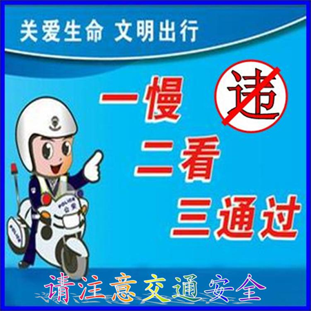

说到交通违章处理，很多车主一定不会陌生，并且不少车主，对于这样的问题 ，烦恼不已。毕竟一旦遇到交通违章，其处理的过程，真的非常麻烦，且工作效率 也相当差。然而出门在外，开车总会面临这样那样的违章。因此对于广大车主来说 ，定然想选择，更便利快捷的违章处理方式，从而更好地解决问题。 交通违章处理，其主要分为现场交通违章处理，以及车辆费现场交通违章处理 。如果是现场违章，也就是立即需要进行相应的惩罚。且车主，必须在半个月之内 ，解决所有的罚款问题。如果是非现场违规，也就是通过摄像头，发现有违规的现 象。在处理的时刻，车主不仅需要在交通部门进行漫长的等待，而且需要经过一系 列的流程处理，从而非常的麻烦。而不少车主，工作非常忙，实在难以抽出身，面 对这样的问题。对此我们可以让交通违章处理代办，解决这样的问题。 说到违章代办机构，也就是帮助车主，进行违章代办的主要机构。其主要优势 在于，办事的效率非常高，毕竟进行代办的工作人员，业务都较为熟悉，因此在一 小时左右的时间，就可以进行相应的工作。且不用经过半场的排队。因此办事的整 体效率，也让人深感满意。即使是异地违章，也可以进行帮助处理。从而对于较忙 的车主来说，的确是不二的选择。
